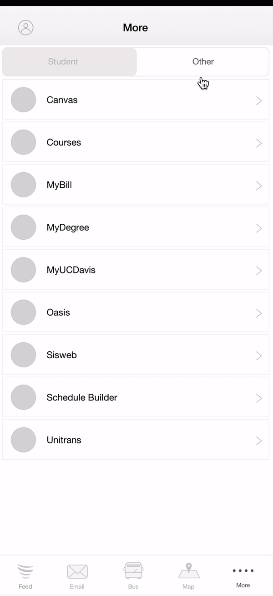
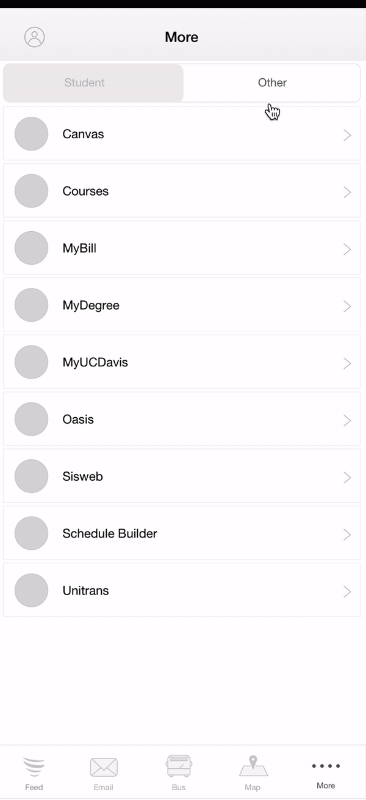

Introduction
VICTR (The Virtual Interaction & Communication Technology) lab at UC Davis, under Jorge Pena, studies the “uses and effects of interactive technologies”, particularly in how the design features in video games and virtual environments impacts online and offline experiences. As a part of the design team at #include, I worked to refresh this research lab website to improve the user experience and overall look, allow key audiences better navigate this site, and convey the lab’s mission in a clear and engaging way.
The Problem
The current website interface leaves users feeling frustrated, uninspired, and confused—not only is it difficult for a user to get where they need to be in an intuitive manner, but also the site also holds an outdated aesthetic. An improved user experience and interface is needed to allow the existing content be more accessible to audiences.
Current design for the VICTR lab website.
Initial User Research
Survey
User Interviews
User Goals
In order to properly align our goals with the stakeholder’s goals, we conducted a stakeholder interview with Jorge Pena, lab director of VICTR lab. From this, we gathered information about the project timeline + limitations, design constraints, potential users + audiences to target, high traffic pages, and stakeholder goals for the website redesign.
In terms of website analytics, we found that high traffic pages included News Items, Prospective Students, and Become an Undergraduate Student. This data helped shape an indication of user types who were visiting the page, as well as what their goals and purposes were.
Current Interface Analysis
Usability Testing
User Interviews
Based on our stakeholder interview, we found what our user types were, as well as their use cases and goals. From this, we were able to understand who we were designing for, as well as which pages / what content was most important for the majority of users.

Detailed analysis of current interface.
Pain Points
Outdated visual design
Visually, the website is outdated, sterile / static. Modernization and a new aesthetic are important, as this would drive the site to become more user-friendly and engaging.
Lack of visual guidelines / hierarchy
Pages were not unified in design guidelines (odd padding, font size, margins, etc), and lacked hierarchy (logo overshadow page text, etc).
Needs organizational clarity
The navigation bar was unclear in what kind of information would be presented. As shown from usability testing, users were unable to get to where they want to be—which was frustrating and resulted in a negative experience.
Needs more social media capabilities
Needs areas to link to Github, Facebook, etc. to enhance marketing of lab overall and encourage visitors to be connected to the lab digitally.
Competitive Analysis
Outdated visual design
Visually, the website is outdated, sterile / static. Modernization and a new aesthetic are important, as this would drive the site to become more user-friendly and engaging.
Lack of visual guidelines / hierarchy
Pages were not unified in design guidelines (odd padding, font size, margins, etc), and lacked hierarchy (logo overshadow page text, etc).
Needs organizational clarity
The navigation bar was unclear in what kind of information would be presented. As shown from usability testing, users were unable to get to where they want to be—which was frustrating and resulted in a negative experience.
Needs more social media capabilities
Needs areas to link to Github, Facebook, etc. to enhance marketing of lab overall and encourage visitors to be connected to the lab digitally.

Competitive Analysis w/ UCB Mobile and UCLA Mobile.
Design Goals
Unify pages into proper visual guidelines + hierarchy
Often, we saw an odd use of margin on pages, imposing banners, and broken links, which can be fixed by a set of visual guidelines. In addition, by assigning different visual characteristics to sections of information and by noting of the content hierarchy, we can allow users understand information more easily.
Allow for easier navigation and organizational clarity
Allow audiences to achieve user goals / navigate the site in an easier manner. Make existing content more accessible to audiences.
Convey the lab’s mission across the site
Show user the lab’s missions in an inviting way (increase social media capabilities, visually highlight the lab’s mission, etc).
Information Architecture
+ User Flows
During user testing, we found that the organization in the navbar was confusing and unintuitive, so we set on fixing this issue. Below is the current and revised sitemap for comparison. Here are some revisions made:
Research / Background
Place in “About”, instead of on the sidebar. This way, there is more open space on each page for other text, and all lab information is now in “About”.
Become an Undergraduate Student
During user testing, we found that this was one of the most confusing pages to locate—it currently is placed on the sidebar, but is only accessible after scrolling. In addition, by just looking at the tabs, it’s unclear to users that prospective undergraduates (not only prospective graduates) can join. Thus, both (prospective undergraduates and prospective graduates) are now under “Get Involved”.
Prospective Graduate Students
Site is only inviting to prospective graduate students, not undergraduates. In addition, using a title such as “Get Involved” introduces an encouraging and inviting CTA for students looking to join.
Graduate Students
“Prospective Graduate Students” and “Graduate Students” sounds too closely related—titles were confusing during user testing and do not elaborate on the differences. Tab is now put under “Team”, where all lab members are introduced.
Current and revised sitemap.
Low-fidelity Sketches

Mid-fidelity Mockups


 

Left to right: Feed, Email, Bus, Map, More
Branding
Current and revised sitemap.
High-fidelity Prototypes
Current and revised sitemap.
Redesign Walk-through
Takeaways